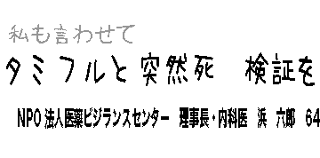

（2009.12.27号）
『薬のチェックは命のチェック』インターネット速報版No140
09インフル
突然死とタミフル
当センターの分析を読売新聞が掲載
NPO法人医薬ビジランスセンター（薬のチェック） 浜 六郎
09Aインフルエンザ（いわゆる「新型」インフルエンザ）における突然死が、タミフル使用と強い関係があるとの分析結果を『薬のチェックは命のチェック』37号（2010年１月発売）に掲載し、インターネット速報版138号で速報しました。

この件に関して読売新聞（大阪本社）が注目され、取材がありました。その後の補足集計結果も踏まえて、この結果が12月27日（日曜日）の朝刊に掲載されました（13面くらし・健康・医療欄：新聞切り抜き）。
薬害を防ぎ、薬を適切に使うための調査研究や情報提供を、10年前から独立した民間団体の立場で続けています（注1）。
インフルエンザにかかった子供どもが睡眠中に突然死する例が相次ぎ、「従来と違う脳症」と、大阪の報告したのを2005年はじめに知りました(注2)。6人中4人がタミフルを服用し３〜7時間後に息絶えていました(注3)。
私は「子供では(注4)異物の侵入を防ぐ脳の機能が未熟なので、薬が入り込み。呼吸中枢が抑制されたのでは」と指摘しました。以来、タミフルと突然死の関係を重視して研究していますが、疑いは深まるばかりです(注5)。
いわゆる「新型インフルエンザ」(注6)ではどうでしょうか。厚生労働省が公表している死亡例のデータをもとに、薬との関係を分析しました(注7)。11月27日までに公表された74人の経過を調べると、「急速に呼吸異常が現れ、意識障害を起こして亡くなる例」（突然型）と「連続的に悪化が進む例」（進行型）の２つのタイプに分けられました。
突然型では54人中36人（67％）、進行型では20人中3人（15％）が、悪化する前にタミフルを飲んでいました(注8)。統計学的に検討してみると、タミフルを服用した場合、進行型でなく突然型で死亡する危険が11倍高まるという計算になりました（注9）。
ただ、死亡例だけの検討では、危険度が高く出すぎるので、軽症者の服用率を推定して比較しました。厚生労働省の検討会に出た資料(注10)では、今年5〜10月に薬を使ったのは計570万人と推定され、同じ時期の推定患者数の約90％、薬の市場占有率を掛けると、推定服用率はタミフル52％、リレンザ38％です(注11)。突然型ではタミフル36人、リレンザ4人、タミフルを飲むと突然死する危険性が4倍高まりそうだ(注12)、という結果になりました。
断定するにはデータが不十分ですが、これは控えめな見積もり。突然死の目立つ発症初期に限ると、軽症者の服用率はもう少し低いはずだからです（注13）。
タミフル服用後、急激に体温が下がったという相談も寄せられています。32度まで下がったこどももいます(注14)。
マウスの実験では、タミフルを与えると急激に体温が下がるというデータがあります(注15)。解熱剤と一緒だと、さらに激しい体温低下が起きます（注15）。この実験からも、薬がウイルスの増殖を抑えて体温がさがるわけではなく、脳の体温維持中枢の働きを押さえ込んだ結果と考えられます。同じ仕組みで呼吸中枢も抑制され、呼吸が停止するのでしょう。
最近、国際研究グループ「コクラン共同計画」により、「タミフルが肺炎などの重症化を防ぐとする十分な科学的根拠はない」と報告されました(注16：速報No139)。これまでは「効果が証明されている」とされ、世界保健機関（ＷＨＯ）や各国政府が推奨する根拠の一つになっていたのです。
私が示したタミフルの危険性は、海外の研究者に注目されています。メーカーにデータの提示を求め、有効性と害を再検討しようという動きが本格化しています。日本の研究者も、こうした科学的な検証作業の重要性を、十分に認識してほしいですね。
読売新聞の限られた紙面では述べられなかった内容について、注釈を加えておきました。参考にしてください。
- 注1：薬を適切に使うための調査研究や情報提供は、勤務医時代から30年以上にわたり続けているが、1997年に病院退職後し医薬ビジランスセンターを設立してから13年、医薬ビジランスセンター（薬のチェック）をＮＰＯ法人にしてからだと、ちょうど10年になる。
- 注2：1歳未満に使用できないとの企業の情報が、赤ちゃんラットの突然死の実験結果からきていることを論文に書いている最中の2005年2月、友人の林敬次医師（小児科医）から2003年末に出版された塩見医師の論文を紹介され知った。
- 注3：タミフルを服用し３〜7時間後に息絶えていたとの情報は読売新聞の塩見医師への取材による。6人中タミフルを飲んでいなかった2人のうち1人がアマンタジン、もう1人は、テオフィリンといういずれも、けいれんを起こしやすい薬剤を服用しており、インフルエンザそのものではなく、やはり薬剤が原因であった。
- 注4：インフルエンザにかかった初日で熱がピークにあるときには、子どもに限らず、大人でも異物の脳内への侵入を防止する機能が傷害・障害され、タミフルが脳中に移行して呼吸を抑制しうる。
- 注5：「疑いは深まるばかりです」というのは遠慮気味の表現。少なくとも4種類の動物を使った実験で、ヒトと同様に呼吸抑制から突然死が生じ、脳中の濃度の推移と密接に関係し、脳内侵入のメカニズムやタミフルが呼吸抑制や精神病症状発症と関係深い受容体への親和性が否定できないこと、臨床試験結果、各種疫学調査、今回の突然死との関連の疫学調査など、全て結果が一致しており、因果関係は確実であると考えている。
- 注6：今年「新型インフルエンザ」あるいは「豚インフルエンザ」などと大騒ぎされたインフルエンザは、新型でも豚型でもない、単に09年に流行した季節性インフルエンザである。そのため、私は、09Aインフルエンザ（いわゆる「新型」インフルエンザ）、あるいは09年型インフルエンザ」「09エンザ」などと呼んでいる。
- 注7：『薬のチェックは命のチェック』37号に発表した。また、その内容は、インターネット速報版No138で速 報した。
- 注8：このうち、受診前にすでに死亡していたり、人工呼吸器が必要なほど悪化していた人が突然型10人、進行型では7人いた。受診以降に突然型で死亡した人が44人、進行型で死亡した人が13人いた。
- 注9：統計学的に高度に有意であった（p<0.0001）。
- 注10：平成２１年度薬事・食品衛生審議会医薬品等安全対策部会安全対策調査会（第５回）及び新型インフルエンザ予防接種後副反応検討会（第２回）（第２回合同開催）参考資料２−５：抗インフルエンザウイルス薬の使用状況（企業提出資料）
- 注11：タミフルを処方された人は52.4%、タミフルを処方されなかった人は47.6％。
- 注12：受診した後で突然悪化した44人中のタミフル服用36人とタミフルを服用しなかった8人のオッズ（倍率）と、タミフルを処方された52.4%とタミフルを処方されなかった47.6％とオッズ（倍率）の比をもとめたのが、オッズ比でこれが4.09となるので、このことから、タミフルを飲むと突然死する危険度（相対危険度）が4倍高まる、と推定できる。
- 注13：突然死の目立つ発症初期に限ると、軽症者の服用率がもう少し低いだけでなく、突然型で死亡した人の中でのタミフル服用者の頻度が増すと予想されるので、双方からして、より関連は強まる。
- 注14：32度まで下がった子は、10代の女性。中外提供座談会で紹介された例。当センターで相談を受けた中でとくに目立つのは、39.6℃あった体温が、タミフルを服用して2時間後には34℃となった29歳の女性である。わずか2時間の間に5.6度も体温が下がった。その後呼吸困難となり、病院を受診したにもかかわらず、救急室でけいれんを起こし死亡された。このときのけいれんは、おそらく、極端な酸素不足のためであったと思われる。
- 注15：Ono H, Nagano Y, Matsunami N, Sugiyama S, Yamamoto S, Tanabe M.2008. Oseltamivir, an anti-influenza virus drug, produces hypothermia in mice. Biol Pharm Bull. 31(4):638-42. その一部を
『薬のチェックは命のチェック』速報No116
第１演題のスライド：No10（単独で解熱）、11（解熱剤併用でより強くげねつ）に示した。
- 注16：『薬のチェックは命のチェック』速報No139参照 ぜひ、ご覧ください。
市民患者が「ほんまもん」の情報を持つことが真の改革につながる
薬の「ほんまもん」情報は『薬のチェックは命のチェック』
で！！